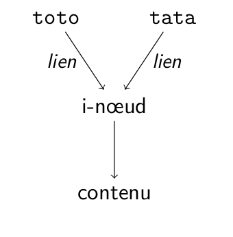

Open-up
Course 7 : FileSystems

Speaker : Benoit Tellier
Why this presentation ?
- Manage disk partitions
- Managing file systems
- Links
Managing disk partitions
Disk partitions
- Pretend you have several disks
- Benefit : separate OS
- Benefit : you might need several filesystem for the same computer
- Benefit : better isolation
Disk partitions types
- Primary
- Extended
- Logical
fdisk
- Allow you to edit partitions
- Works well for traditional BIOS
- Use carefully and on inactive disk
- NB 83 for future Linux partitions
$ fdisk -l /dev/sda
Disk /dev/sda: 8589 MB, 8589934592 bytes
255 heads, 63 sectors/track, 1044 cylinders, total 16777216 sectors
Units = sectors of 1 * 512 = 512 bytes
Sector size (logical/physical): 512 bytes / 512 bytes
I/O size (minimum/optimal): 512 bytes / 512 bytes
Disk identifier: 0x000e4508
Périphérique Début Fin Secteurs Taille Type
/dev/sda1 2048 419432447 419430400 200G Espace de stockage Microsoft
/dev/sda2 419432448 629147647 209715200 100G Système de fichiers Linux
/dev/sda3 629147648 1887438847 1258291200 600G Données personnelles Linux
/dev/sda4 1887438848 1953525134 66086287 31,5G Partition d'échange Lin
# fdisk /dev/sda
Bienvenue dans fdisk (util-linux 2.28.2).
Les modifications resteront en mémoire jusqu'à écriture.
Soyez prudent avant d'utiliser la commande d'écriture.
Commande (m pour l'aide): m
GPT
- Manage partition table
- Part of UEFI standard
- No historical limitations from BIOS
- Again use carefully!!!
root@horizon /mnt # gdisk -l /dev/sda
GPT fdisk (gdisk) version 1.0.1
Partition table scan:
MBR: protective
BSD: not present
APM: not present
GPT: present
Found valid GPT with protective MBR; using GPT.
Disk /dev/sda: 1953525168 sectors, 931.5 GiB
Logical sector size: 512 bytes
Disk identifier (GUID): EE3BEC27-1813-42E5-9C3D-EDBD424AF3C4
Partition table holds up to 128 entries
First usable sector is 34, last usable sector is 1953525134
Partitions will be aligned on 2048-sector boundaries
Total free space is 2014 sectors (1007.0 KiB)
Number Start (sector) End (sector) Size Code Name
1 2048 419432447 200.0 GiB 4202 Windows Storage Spaces
2 419432448 629147647 100.0 GiB 8300 Linux filesystem
3 629147648 1887438847 600.0 GiB 8302 Linux /home
4 1887438848 1953525134 31.5 GiB 8200 Linux swap
root@horizon /mnt # gdisk /dev/sdb
GPT fdisk (gdisk) version 1.0.1
Partition table scan:
MBR: protective
BSD: not present
APM: not present
GPT: present
Found valid GPT with protective MBR; using GPT.
Command (? for help):
Parted
- Manage partition table again (!!!)
- UEFI and standard BIOS
- Again use carefully!!!
root@horizon /mnt # parted /dev/sda -l
Modèle: ATA KINGSTON SMSM151 (scsi)
Disque /dev/sdb : 128GB
Taille des secteurs (logiques/physiques): 512B/512B
Table de partitions : gpt
Disk Flags:
Numéro Début Fin Taille Système de fichiers Nom Fanions
1 1049kB 106MB 105MB fat32 EFI system partition démarrage, esp
2 106MB 240MB 134MB Microsoft reserved partition msftres
3 240MB 57,4GB 57,2GB ntfs Basic data partition msftdata
5 57,4GB 57,9GB 524MB fat32 EFI System démarrage, esp
6 57,9GB 112GB 54,0GB ext4 Linux x86-64 root (/)
4 112GB 128GB 16,1GB ntfs Basic data partition caché, diag
root@horizon /mnt # parted /dev/sda
GNU Parted 3.2
Utilisation de /dev/sda
Bievenue sur GNU Parted ! Tapez 'help' pour voir la liste des commandes.
(parted)
Commande (m pour l'aide): n
Type de partition
p primaire
e étendue
Sélectionnez (p par défaut): p
Numéro de partition (1-4, default 1):
Premier secteur (2048-524287, default 2048):
Dernier secteur, +secteurs ou +taille{K,M,G,T,P} (2048-524287, default 524287): +128M
Une nouvelle partition 1 de type Linux et de taille 128 MiB a été créée.
Commande (m pour l'aide): n
Type de partition
p primaire
e étendue
Sélectionnez (p par défaut): p
Numéro de partition (2-4, default 2): 2
Premier secteur (264192-524287, default 264192):
Dernier secteur, +secteurs ou +taille{K,M,G,T,P} (264192-524287, default 524287):
Une nouvelle partition 2 de type Linux et de taille 127 MiB a été créée.
Commande (m pour l'aide): w
La table de partitions a été altérée.
What is a file system ?
- Offer file operations (read, write, metadata, etc...) and directories
- Any kind of backend : Block devices, network, other file systems...
- Put together by Linux Virtual File System (VFS)
A small list of fyle systems
- ext 2 : Developped by a french : Rémy Card
- ext 3 : Adds journalisation to ext 2
- ext 4 : compatible with ext3 and adds functionnalities (larger, less fragmentation, pre-allocation, delayed allocation, etc...)
A small list of fyle systems
- XFS : Developped by SGI. Journalised and performant
- VFAT : virtual file allocation table. Introduced by windows.
- ReiserFS : Older journalised file system for Linux. Adapted to many small files.
- AUFS : Another union File System
mkfs -t ext3 /dev/sdb1
mkfs -t ext4 /dev/sdb1
mkfs -t xfs /dev/sdb1
mkfs -t reiserfs /dev/sdb1
mkfs -t vfat /dev/sdb1
mkswap /dev/sdb2
dd if=/dev/zero of=swapfile bs=1024 count=65536
mkswap swapfile
fsck
- file system check
- The filesystem under check should not be mounted
- Non referenced files found are mover to lost+found
- Only a front, that lauch the right commad for the filesystem type
$ fsck
$ fsck /dev/sdb1
$ fsck UUID=3e6be9de-8139-11d1-9106-a43f08d823a6
$ fsck LABEL=home
# Accept automatically proposed corrections
$ fsck -y
# Froce fsck
$ fsck -f
root@horizon ~ # dumpe2fs -h /dev/mapper/loop9p2
dumpe2fs 1.43.3 (04-Sep-2016)
Filesystem volume name:
Last mounted on:
Filesystem UUID: 8b4e982b-db91-4772-9352-54394296f72d
Filesystem magic number: 0xEF53
Filesystem revision #: 1 (dynamic)
tune2fs
- Tune ext file systems
- -j create journal
- -l print super blocks content
- -L labels -U UUID
root@horizon /mnt # df -h -i
Sys. de fichiers In-uds IUtil. ILibre IUti% Monté sur
dev 2,0M 536 2,0M 1% /dev
run 2,0M 888 2,0M 1% /run
/dev/sdb6 3,2M 486K 2,7M 16% /
tmpfs 2,0M 53 2,0M 1% /dev/shm
tmpfs 2,0M 12 2,0M 1% /sys/fs/cgroup
/dev/sdb1 0 0 0 - /boot
tmpfs 2,0M 142 2,0M 1% /tmp
/dev/sda3 38M 1,4M 37M 4% /home
/dev/sda2 6,3M 21K 6,3M 1% /var
tmpfs 2,0M 19 2,0M 1% /run/user/120
tmpfs 2,0M 224 2,0M 1% /run/user/1000
root@horizon /home/benwa/Music # du -h -d 1
5,8M ./Sexion D'assaut
2,1M ./Kid cudi
596M ./Rammstein
606M ./D'espairsRay
7,0M ./Angelic Upstarts
130M ./Fela Ransome-Kuti And Africa 70
4,7M ./modjo
43M ./Simple Minds
$ mount -t iso9660 -o ro /dev/sr0 /mnt
• Mounting a file, as read only
$ mount -t iso9660 -o loop,ro image.iso /mnt
• Mounting according to /etc/fstab :
$ mount /opt
• Mount all file systems as specified in fstab :
/etc/fstab :
$ mount -a
$ umount /mnt
# UUID=2fd76f47-41a7-4034-9ab0-409c3eb9f71d
/dev/sdb6 / ext4 rw,relatime,data=ordered 0 1
# UUID=3A30-1F94 LABEL=SYSTEM
/dev/sdb1 /boot vfat rw,relatime,fmask=0022,dmask=0022,codepage=437,iocharset=iso8859-1,shortname=mixed,errors=remount-ro 0 2
# UUID=5513c310-2ca7-4dfa-a09c-b96d76f5118d
/dev/sda2 /var ext4 rw,relatime,data=ordered 0 2
# UUID=6feb94f5-aa1f-481e-bf41-ab8672b27fb1
/dev/sda3 /home ext4 rw,relatime,data=ordered 0 2
Mounting as non priviledged user
- user option in fstab
- 0 for checks
- Conventionnal mount point in /media
How does a LiNUX filesystem looks like ?
- A file : several names, one inode, content
- Directory : one inode, associations from name to inode
- Such an association is called "link"
Hard links
- Make a name point to the inode of an other file
- ln link_target link_name
- You must be the owner
- On the same file system
- Do not apply for directory
Hard links
Soft links
- Make a name point to another name
- ln -s link_target link_name
- No need to be the owner
- Accross file system
- Apply for directory